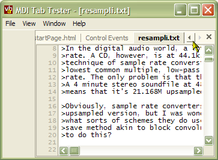
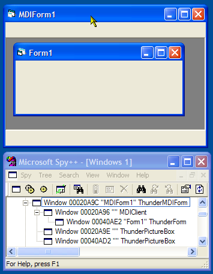
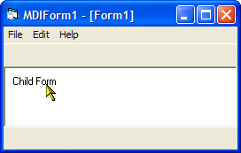
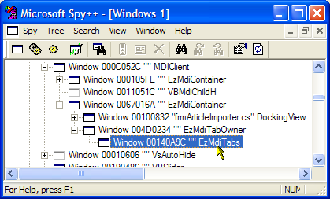

VB5 MDITabs Binary (14K)
VB5 MDITabs Binary (14K)
 VB5 MDITabs Demonstration (50K)
VB5 MDITabs Demonstration (50K)
 VB5 MDITabs Full Source Code (79K)
VB5 MDITabs Full Source Code (79K)
 VB6 MDITabs Binary (15K)
VB6 MDITabs Binary (15K)
 VB6 MDITabs Demonstration (46K)
VB6 MDITabs Demonstration (46K)
 VB6 MDITabs Full Source Code (77K)
VB6 MDITabs Full Source Code (77K)
 28 Mar 2003
28 Mar 2003
Correction to colour selection logic; background colour of tabs now renders correctly under all colour schemes.
Minor drawing and tab selection logic fixes.
 vbAccelerator Toolbar and CoolMenu Control v3.5
vbAccelerator Toolbar and CoolMenu Control v3.5
 Subclassing Without The Crashes
Subclassing Without The Crashes

vbAccelerator MDITabs Control
Convert MDI forms to a Visual Studio style tabbed display
Over the years, Microsoft applications have been moving away from the old Multiple Document Interface style to a more modern look. This component, provided as a DLL, automatically converts a VB MDI application to one which looks like Visual Studio, with a tab for each window. Tabs can be scrolled and repositioned by the user and you get an excellent usable interface with virtually no extra code. Note however that this implementation does not allow undocking or multiple tab groups.
Moving from MDI
There are a number of different ways you can achieve this: when File Manager was replaced by Explorer, Microsoft opted for a single document interface (SDI) which allows you to open multiple windows. In Outlook, different windows are selected by the Folders view and Outlook bar, whilst in Visual Studio multiple windows are shown open but in different tabs.
The vbAccelerator Toolbar and CoolMenu control allows you to create an Outlook-style application with the option to hide the MDI control buttons whilst forms are maximised. However, if you wanted to create a Visual Studio style application that way, with tabs for each of the forms it would be difficult since you would need to draw a tab control below the toolbar and somehow synchronise that with each of the windows.
This article provides a component which automates setting up Visual Studio style tabs for MDI applications and provides all of the code to scroll and remove and replace tabs.
Limitations
The Visual Studio tabbed MDI window is considerably more powerful than this implementation, since it additionally allows undocking of panes, and creation of separate tab groups. Unfortunately this is extremely difficult in Visual Basic, since you would need to be able to change the parent of a form object, something I have not found a reliable way to do despite (literally) years of experimentation.
Despite this, a tabbed application interface still adds to the impact of an application, and similar techniques are used to good effect in applications like Altova's XML Spy.
How to Use It
There are four steps you need to perform when using this component:
- Add a reference to the vbAccelerator MDITabs component and create a WithEvents instance of it in your main MDI form.
- Modify all of the MDI child windows in your application so they have no control box or minimise button. For maximum smoothness of display, you can also set the WindowState property to 2 (Maximized) so the form initally loads maximised.
- Whenever you create an MDI child window, change its caption or unload an MDI child window, call the ForceRefresh method of the component.
- Respond to the CloseWindow event of the component in order to unload an MDI child form.
That's really all you need to do to make it work. You can enhance the interface by responding to TabClick and TabBarClick events as well, which you can use to show a popup menu in front of the tab or the tab bar area that's been clicked on. You can also choose whether the tabs are shown above or below the forms using the TabAlign property, and switch whether the tabs are scrollable or squash up to fit the available space by setting the AllowScroll property. By default the component is configured to allow scrolling. Finally, you can change the font used to display the tabs through the Font and SelectedFont properties.
How It Works
When an MDI window is created, Windows actually creates two separate windows: the main MDI window itself and also a window to hold the MDI child windows, called the MDIClient. You can see this by inspecting a MDI window using Windows Spy or similar tool:
Next we note that unless the child form has a Control Box, when it is maximised Windows does not display the MDI control buttons (minimise, maximise, close) in the menu bar.
Clearly this is close to the tabbed display in Visual Studio, all that is missing are the tabs themselves and the fact that there is a thick inset border around the child form. Removing the thick inset border is straightforward: the MDIClient window itself has this border, and it is drawn by Windows because the MDIClient window has the WS_EX_CLIENTEDGE extended window style set. This can be removed using the GetWindowLong and SetWindowLong Win32 API calls once you know the handle of the MDIClient window. To get the handle of the MDIClient, just use the Win32 FindWindowEx call:
Private Declare Function FindWindowEx Lib "user32" Alias "FindWindowExA" _
(ByVal hWnd1 As Long, ByVal hWnd2 As Long, _
ByVal lpsz1 As String, lpsz2 As Any) As Long
...
hWndMdiClient = FindWindowEx( _
hWndMdi, 0, "MDIClient", ByVal 0&)
Drawing the tabs themselves is more tricky. There are two possible approaches:
- Add a control to the MDI form which aligns above the MDI child windows. Then draw the tabs in that.
- Modify the non-client area of the MDI child window so the actual child windows are pushed down, and then draw the tabs in the non-client area.
Whilst the first method would be simple to implement, unfortunately it isn't possible to do in VB under all cases. The reason for this is that any control which is aligned to the top of a form extends the whole width of the form. Therefore if you wanted to have any left- or right-aligned components in the MDI window these would appear below the tab strip. This would prevent you, for example, from implementing a typical DevStudio-style interface with a toolbox and properties window.
Therefore we need to draw the MDI tabs into the non-client area. To modify the size of the non-client area of a window, you need to intercept the Windows WM_NCCALCSIZE message. This allows you to suggest an alternative size (or positioning) of the non-client area:
' Types needed for NCCALCSIZE processing:
Private Type RECT
Left As Long
Top As Long
Right As Long
Bottom As Long
End Type
Private Type WINDOWPOS
hWnd As Long
hWndInsertAfter As Long
x As Long
y As Long
cx As Long
cy As Long
flags As Long
End Type
Private Type NCCALCSIZE_PARAMS
rgrc(0 To 2) As RECT
lppos As Long 'WINDOWPOS
End Type
' The WM_NCCALCSIZE message:
Private Const WM_NCCALCSIZE = &H83
' WM_NCCALCSIZE return values;
Private Enum E_WM_NCCALCSIZE_Return_Values
WVR_ALIGNBOTTOM = &H40
WVR_ALIGNLEFT = &H20
WVR_ALIGNRIGHT = &H80
WVR_ALIGNTOP = &H10
WVR_HREDRAW = &H100
WVR_VALIDRECTS = &H400
WVR_VREDRAW = &H200
WVR_REDRAW = (WVR_HREDRAW Or WVR_VREDRAW)
End Enum
...
Private Function ISubclass_WindowProc( _
ByVal hWnd As Long, ByVal iMsg As Long, _
ByVal wParam As Long, ByVal lParam As Long) As Long
Case WM_NCCALCSIZE
'Debug.Print "WM_NCCALCSIZE"
Dim tNCR As NCCALCSIZE_PARAMS
Dim tWP As WINDOWPOS
If wParam <> 0 Then
' lParam containts a pointer to the
' NCCALCSIZE_PARAMS structure:
CopyMemory tNCR, ByVal lParam, Len(tNCR)
' the NCCALCSIZE_PARAMS structure contains
' a pointer to the WINDOWPOS structure:
CopyMemory tWP, ByVal tNCR.lppos, Len(tWP)
' Set the first rectangle to the WINDOWPOS
' size:
With tNCR.rgrc(0)
.Left = tWP.x
.Top = tWP.y
.Right = tWP.x + tWP.cx
.Bottom = tWP.y + tWP.cy
End With
' Now modify the rectangle if we're showing tabs
' to allow space for the tab strip itself:
If (m_bShowTabs) Then
tNCR.rgrc(0).Left = tNCR.rgrc(0).Left + 2
tNCR.rgrc(0).Right = tNCR.rgrc(0).Right - 2
If (m_eTabAlign = TabAlignBottom) Then
tNCR.rgrc(0).Top = tNCR.rgrc(0).Top + 2
tNCR.rgrc(0).Bottom = tNCR.rgrc(0).Bottom - m_lTabHeight
Else
tNCR.rgrc(0).Top = tNCR.rgrc(0).Top + m_lTabHeight
tNCR.rgrc(0).Bottom = tNCR.rgrc(0).Bottom - 2
End If
End If
' Set the second rectangle to equal the first:
LSet tNCR.rgrc(1) = tNCR.rgrc(0)
CopyMemory ByVal lParam, tNCR, Len(tNCR)
' Tell Windows we've modified the size:
ISubclass_WindowProc = WVR_VALIDRECTS
Else
' lParam points to a rectangle
ISubclass_WindowProc = CallOldWindowProc(hWnd, iMsg, wParam, lParam)
End If
Once this is done, there will be a space for the tabs. Initially, no drawing will occur in this area so it will be filled with whatever happens to appear on the screen at this position, so you need to draw into it. This is done by intercepting the WM_NCPAINT (non-client paint) message:
Case WM_NCPAINT
' Ensure the standard mon-client drawing is completed:
ISubclass_WindowProc = CallOldWindowProc(hWnd, iMsg, wParam, lParam)
' Do custom drawing: first get a DC to the non-client area:
Dim lhDC As Long
lhDC = GetWindowDC(hWnd)
' Now can draw in the area we've cleared.
...
' Clear up DC:
ReleaseDC lHDC, hWnd
Check the actual source code for the details of drawing the tabs. The code uses an EnumWindowsProc callback function to determine all of the windows within the MDIClient area, and the WM_MDIGETACTIVE message to determine which window is the currently selected MDI child (if any).
Finally, we need to intercept the user clicking on a tab or button within the tab control. There are two messages Windows sends to the non-client area to allow you to check for mouse events:
- WM_NCHITTEST
This message allows you to tell Windows that a non-client area should be treated in a particular way, such as title bar or size gripper. - WM_SETCURSOR
This message is used by Windows to determine which cursor to display, however, since it provides the type of mouse action being performed you can use it to determine mouse movement and button presses in the area.
The WM_SETCURSOR message provides two pieces of information in the lParam of the message: the loword is the HitTest code sent to the WM_NCHITTEST message, which allows you to determine whether you are over a border or title, and the hiword is the mouse message itself. The messages can be filtered to only check when the HitTest code is HTNOWHERE, which means the mouse isn't over any particular UI component of the form's non-client area. You can then use GetCursorPos to determine where the mouse is and check if it hitting any of the components of the form. If it is, and you want to track whether the mouse is still over any object, you can use SetCapture to redirect subsequent mouse events messages as normal (i.e. as WM_MOUSEMOVE, WM_LBUTTONDOWN etc) to the Window. When the mouse is no longer over the object, ReleaseCapture returns the mouse messages to the normal owners (if you don't do this, then nothing will work correctly until the next time the mouse button is pressed and released).
That completes how this implementation works, however, it's useful to compare this to the way tabs are implemented in Visual Studio itself. If you point Windows Spy at the Visual Studio main pane, you see that it is implemented using a standard MDI client window, but this contains another window immediately inside called "EzMdiContainer". This window then contains a window called "EzMdiTabOwner" (which draws the scrolling and close buttons and contains the tabs themselves, drawn in a window called "EzMdiTab". The EzMdiContainer window also contains any child windows which are windows of type "DockingView".
When Visual Studio creates a new tab group, it simply creates a new "EzMdiContainer" window within the MDI Client.
This implementation is easier to code for than my version because it uses separate windows to contain the different components, and these windows can be pretty much written as if they were independent controls, improving the encapsulation. However, it isn't very easy to write a VB version this way, since you would need to be able to change the parent of an object to become part of the MDIClient to create EZMdiContainer or EZMdiTabOwner, and you would also need to change the parent of a form from MDIClient to this new window. As noted before, changing the parent of a Visual Basic form or control is fraught with difficulties and I have not managed to get this to work in a stable manner yet.